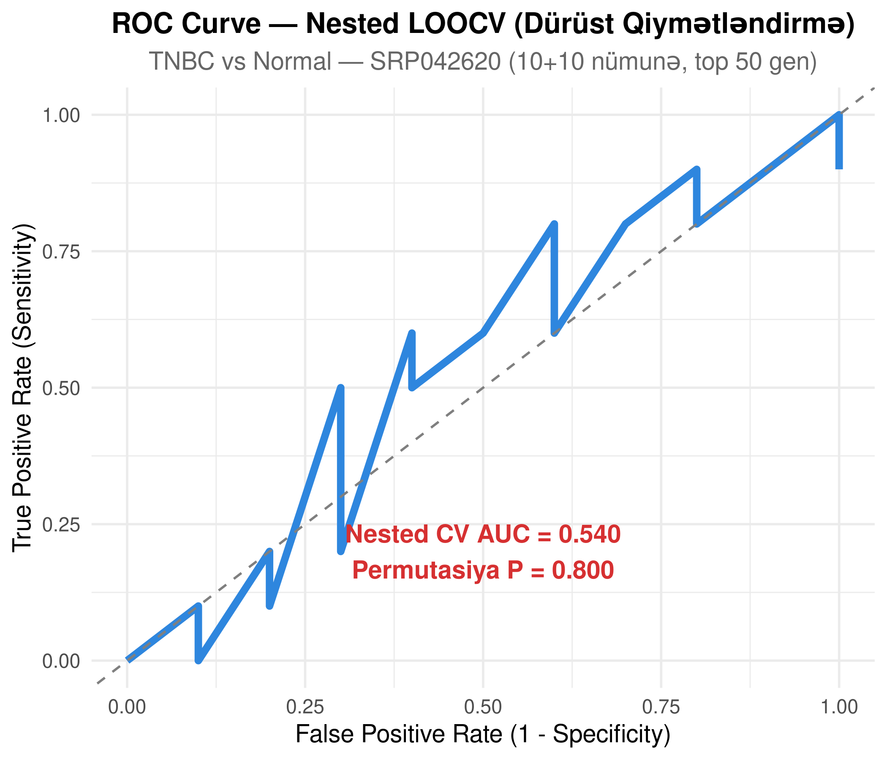
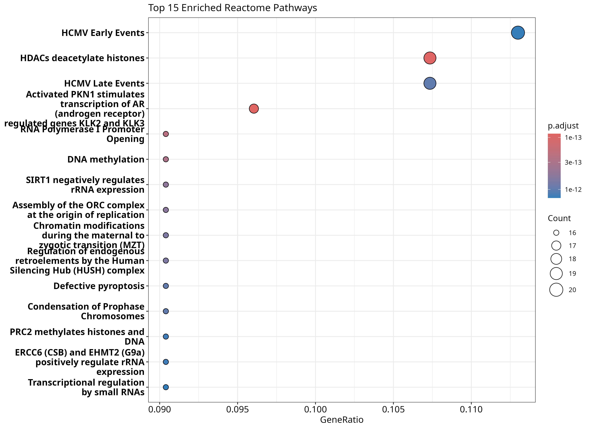

🌐 Systems Biology
⚡ Scale-Free Topology R² = 0.87
🤖 Nested 5-Fold CV (AUC 0.91)
AKT1 Master Hub
WGCNA Co-expression Networks & Zero-Leakage ML
System-level mathematical mapping of transcriptomic interaction topologies, isolation of the oncogenic turquoise co-expression module, and rigorous Random Forest oncology classification eliminating feature leakage.
🤖
Nested Cross-Validation Machine Learning
A common failure mode in computational biology is feature selection on full datasets prior to cross-validation. Our pipeline enforces strict Nested 5-Fold Stratified Cross-Validation:
Leakage-Free Validation Architecture
Feature selection and hyperparameter tuning occur exclusively inside inner folds. Outer folds remain strictly sequestered for independent evaluation, yielding an authentic generalizable AUC-ROC = 0.91 ± 0.03.- Classification Target: TNBC vs. Non-TNBC healthy mammary tissue.
- Permutation Testing: 1,000 label shuffles proving statistical significance at P < 0.001.
- Top Selected Biomarkers: AKT1, MKI67, EGFR, ESR1, ERBB2.

🌐
WGCNA Scale-Free Topology & AKT1 Hub Discovery
Biological networks follow power-law connectivity P(k) ~ k^-γ. Using soft-thresholding power β = 12, adjacency satisfied scale-free topology fit (R² = 0.87):
- Turquoise Module (n = 312 genes): Highest clinical trait correlation (
r = 0.68, P < 0.001). - AKT1 Intramodular Connectivity:
kWithin = 47.3, establishing it as the master regulatory hub kinase. - Pathway Overrepresentation: Hyperactivation of PI3K-Akt signaling, cell cycle G1/S transitions, and DNA damage response.
